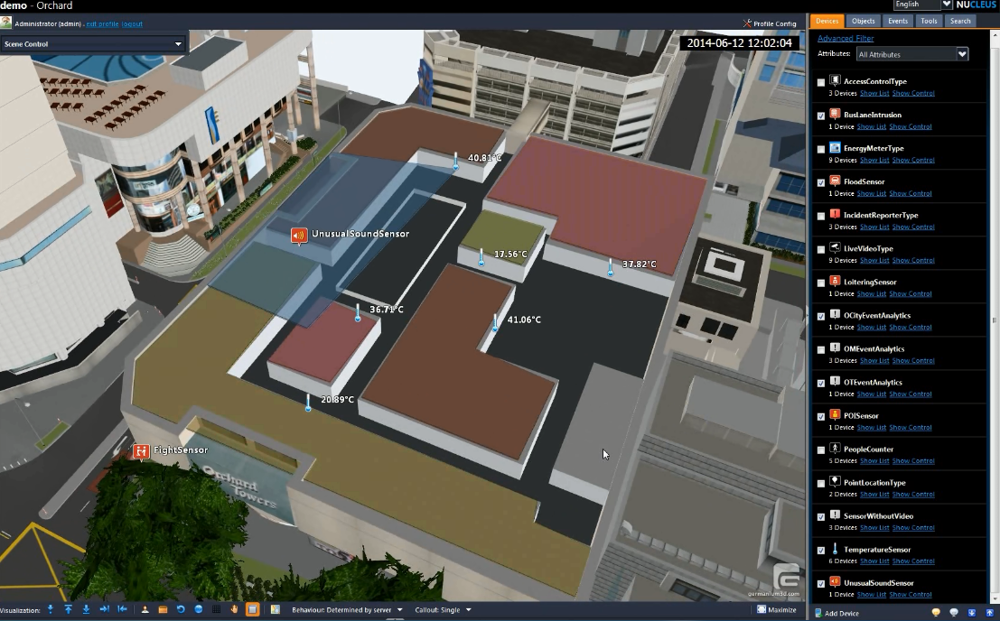
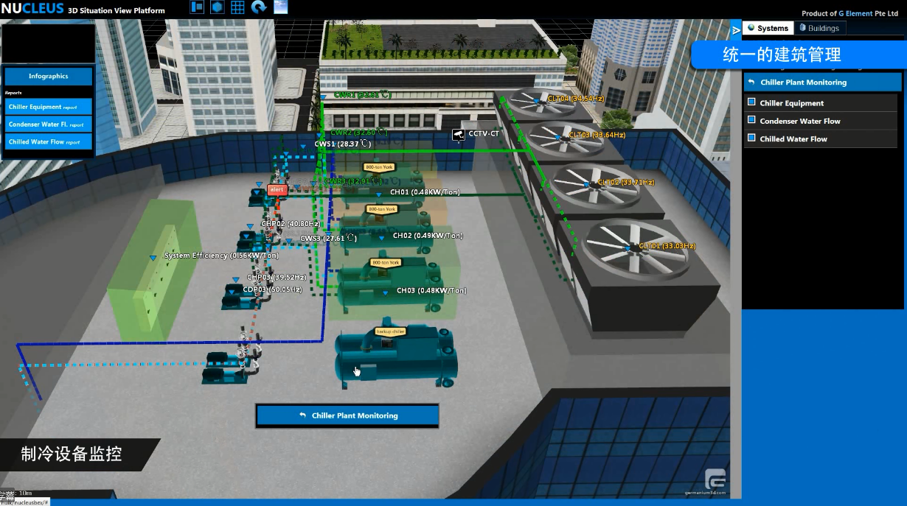
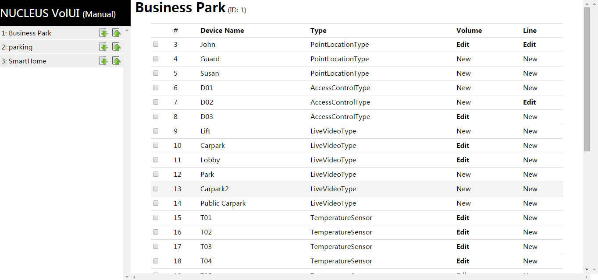
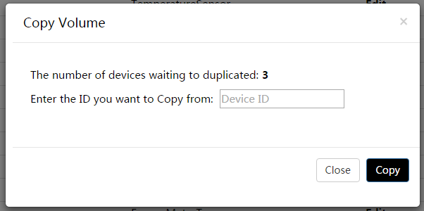

VolUI is a NUCLEUS module that helps user to create and edit the volume or line of NUCLEUS devices. After selecting a device, user is allowed to flexibly edit the volume and line of the device. VolUI will change these data in NUCLEUS database.
This manual introduces the basic concepts and the use of VolUI. Please remember to come back to this manual by typing http://%NUCLEUS_SERVER%/numodules/simui/, where %NUCLEUS_SERVER% is the URL of the NUCLEUS server, or clicking the title located on the left-top of this page.
Volume: an extruded polygon that represents the affecting scope of a NUCLEUS device. User can define the volume of any device, and setting its transparency, color and size. A common example is to use volume to depict the room space where a temperature sensor works. Then user can set proper color of the volume based on the temeprature value that the sensor measures.
Figure 1 shows volumes of several temperature sensors. The different colors indicates the differenct temperature values.
Figure 1: volume of temperature sensors.
Line: Similar to volume, the motivation of desiging line is to show auxiliary information of device. Every device can has a line. The attributes of lines include a set of vertices and color. User can design lines of devices, for example, to illustrate the boundary of an area.
Figure 2 shows a set of refrigeration equipments and its lines that represents the power supply of these equipments.
Figure 2：Devices of regrigeration equipments and their lines.
VolUI has two parts:left panel and main panel。
Left panel provides high-level operations to select sites. It lists all sites of NUCLEUS, each of which is shown in the patter "ID: name". Users need to click a site in order to further operate its devices.
Main panel presents all devices of selected site; see Figure 3 as an example.. The list of devices have five attributes: device ID, device name, device type, volume and line. Note that in the volume or line attribute, a device will have value "Edit" if it has volume or line, or otherwise it will have value "New".
Figure 3：an example of VolUI main panel.
Before using VolUI, please login at left-bottom. Your account can be any authorized user account.
Select a site first in order to edit volume or line of a device. This is done by clicking the corresponding item in left panel. Then user can click the value of a device in volume or line attribute.
Note: there is length limitation on site name. Therefore, the full name of a site may not be shown.
In practice, users may meet the following condition: all the levels of a building have a type of devices whose volume have the same shape. VolUI helps to copy volume quickly. First, tick all devices whose volume are to be created. Next, click "Copy Volume" and "Copy Line" buttons on right-bottom. In the poped window (see Figure 4), input the ID of the device whose volume is to be copied. Click "Copy" button and finish!
Figure 4：the poped window for batch copy.
As it is very similar between editing volume and line, this article only introduces how to edit volume. Users can study by themselves on editing line.
The interface of volume editor is shown in Figure 5. It contains:
Figure 5: the interface of volume editor.
Note that the order of the vertices can be changed by dragging and dropping vertices. Meanwhile, the demo panel on the right hand side shows the shape of the polygon in real time.
The editor provides a link to go back the device list in its left-top part. In its bottom, there are buttons for saving volume, clean current setting, and delete volume.
VolUI 是用于帮助用户创建 NUCLEUS 中站点设备的体积、线的模块。 在选择一个设备后，用户可以灵活的改变该设备的体积和线。 VolUI 将改变的数据直接写入 NUCLEUS 数据库。
该用户手册介绍了有关VolUI的基本概念和使用方法。别忘了您可通过录入 http://%NUCLEUS_SERVER%/numodules/volui/ 或者点击页面左上角的题目来回到该手册。 %NUCLEUS_SERVER% 为 NUCLEUS 服务器的URL。
体积（Volume） : NUCLEUS中用以展现一个设备作用范围或其他含义的一个立体多边形，可以由用户自定义创建，包含了颜色（含透明度）、高度、大小。常见的用例如一个房间内的温度传感器，通过定义体积来直观的展示其作用范围。而在实际情况中，也可以定义不同事件下的体积，如高温时体积变为红色等。
图 1 显示了一组温度传感器所具有的体积，各自代表其检测区域范围。同时，在不同温度范围内会有不同的颜色，用以实时观测温度变化情况。
图 1：温度传感器体积。
线（Line）: 与体积类似，它的设计初衷同样被用于辅助展示设备信息。它是NUCLEUS场景中由一系列拐点构成的虚线，每个设备都可以创建自己的线，它同样具有颜色属性。用户可以自定义其展示目的，常见的用例如某复杂区域，通过线来指示目标设备所在区域。
图 2 显示了一组制冷设备与其对应的实时数据，通过线来标识出各自的目标来协助用户辨认。
图 2：监控制冷设备。
VolUI 的界面包含两部分：左部面板和主面板。
左部面板提供了高层次操作，用以选择站点。这里列出了当前NUCLEUS中所有的站点，每个条目项的标题依次由"ID：站点名称"构成。用户通过点击该列表中不同的站点名称，以操作不同站点设备。
主面板用于展示当前选择站点中的所有设备；如图3所示。 设备列表主要有5项，从前往后依次是ID/设备名称/设备类型/体积/线。 值得注意到是最后两项体积/线中，如果该设备具有某项， 则该项显示为加粗的Edit（编辑），如果不具有该项则显示为New（新建）。
图 3：VolUI主面板。
在开始使用VolUI之前，请在左下角登入Nucleus，您的账号可以是任何得到授权的合法用户。
为了给某设备添加体积/线，需要先确定它在哪一个站点。通过点击左侧面板的站点列表来选择该站点，然后 通过主面板中的设备列表选择需要编辑或修改的体积/线即可。
注：站点名称做了长度限制，如名称过长可能显示不完整。
实际中，我们可能常常会遇到这样的情况：某建筑中的所有楼层具有同样类型的设别， 而这些设备的体积具有同样的形状。VolUI 帮助用户快速的复制体积。首先， 勾选设备列表中需要被批量创建体积/线的设备。然后，点击右下角的 “Copy Volume” 或者 “Copy Line” 按钮。在弹出的窗口中（见图4）输入要复制的设备ID。 点击 “Copy” 按钮完成！
图 4：批量复制主面板。
由于体积和线的编辑过程很相似，这里只介绍有关体积的操作。 用户可以自行研究有关于线的操作。
体积编辑器的界面如图5所示。界面中从上到下依次是：
图 5：体积编辑器界面。
注意，可以通过拖拉点列表中的项目来对多边形中的点重新排序。 同时，编辑器右边的预览面板会实时更新多边形的形状。
编辑器左上角提供了返回设备列表的链接；而最下部则提供了保存、清空和删除功能的按钮。